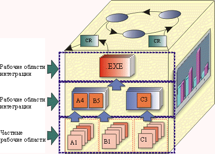

| Концепция: Рабочие области |
 |
|
| Связанные элементы |
|---|
ОпределениеРабочие области - это выделенные области, в которых разработчики работает над своей частью проекта в относительной изоляции от других разработчиков. Для каждого разработчика администратор конфигураций должен создать среду рабочей области. ОбъяснениеРабочая область предоставляет разработчику возможность работать над версиями файлов в согласованной, гибкой и воспроизводимой среде. Рабочая область обеспечивает управление общим доступом и закрытыми зонами. В большинстве проектов разработчикам требуется изоляция от изменений, которые делают другие разработчики, но в то же время требуется выполнять полнофункциональное тестирование с учетом этих изменений. При обслуживании прежних версий разработчику требуется видеть старые версии файлов, документы, тесты, инструменты и другие объекты. Для этих целей рабочая область служит "машиной времени", позволяя вернуться в прежнюю среду, в точности как она выглядела раньше. Изоляция рабочей области требуется для редактирования, компиляции, тестирования и отладки. Однако изоляция рабочей области должна быть относительной, а не абсолютной:
Рабочая область может принадлежать одному разработчику или использоваться совместно группой разработчиков. Помимо системы управления версиями, рабочая область должна обеспечивать возможность закрытого хранения файлов в ходе разработки:
Обычно закрытое хранилище рабочей области расположено в домашнем каталоге разработчика на рабочей станции. Общая рабочая область группы разработчиков может храниться на центральном файловом сервере. Фактическое расположение этой области не имеет значения. Разработчику лишь требуется полный доступ к закрытой зоне рабочей области.  На рисунке показана схема частных и общих рабочих областей в контексте куба CM. Рабочие конфигурацииРабочие конфигурации (профайлы рабочей области) обозначают какие-либо подсистемы, составляющие рабочий набор проекта. Рабочий набор - это список версий подсистем, которые требуются для реализации фрагмента проекта. Список может представлять всю систему или ее подмножество. ПредставленияПредставление обеспечивает доступ к набору файлов в хранилище проекта. Кроме того, представление предоставляет возможность работать с определенными версиями этих файлов:
Рабочая область иногда также именуется представлением, потому что в ней разработчики тестируют изменения, которые потом становятся доступными всему коллективу. Представления бывают двух типов:
Представление копий содержит стабильную и неизменную рабочую среду. Она похожа на дерево каталогов в компьютере. Представление копий заполняется копиями соответствующих версий файлов из хранилищ проектов. Иногда такая структура каталогов называется "песочницей". Если разработчик хочет просмотреть изменения, внесенные другими участниками, то он обновляет представление. Такой стиль работы называется запросным, поскольку при этом информация получается по запросу и не используются механизмы автоматического обновления. Динамическое представление - это виртуальная структура данных, содержащая все данные разработки. В динамическом представлении нет локальных копий файлов, так как используются текущие ресурсы в сети. Динамическое представление применимо в следующих ситуациях:
|
© Copyright IBM Corp. 1987, 2006. Все права защищены.. |